This is the general concept of how we would want the main forest character to be (the character that the player plays as)
This is also the genaral idea of how the main unit would look like for the humans (the main unit that the play plays as)
This is the idea that we have for the lumber jack, for the axe thrower we are just going to add a throw animation and then a axe in the air animation
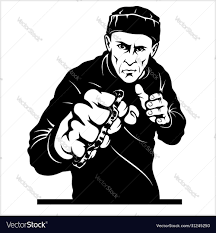this would be the BKB(brass knuckle brute) we would make him more bulky and musclular to give the affect of a tanky unit
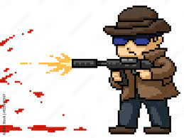This would be the guy with an semi automatic AR we would just edit the cloths he is wearing to make it look like he is from the special OPS
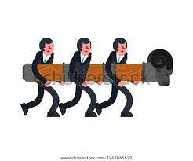
We would put these too images together and only have the strong guy holding the battering ram
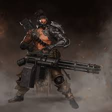this would be the minigunner unit just change up some things and make it into a pixel art
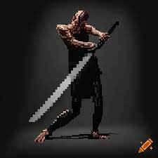This would be the claymore spinner
This is the idea of the black bear unit
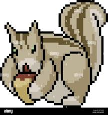This giant squirrel will throw large acorns at you, be carefull
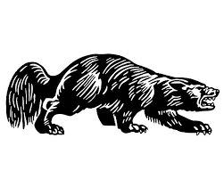This is the genral idea for the wolverine that we wil make
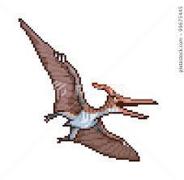this would be the unit that will carry up to 5 units of basic or medium, the high teir of units are too large for the pterodactyl to carry
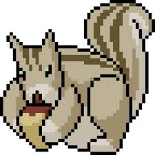We would just make a more massive version of this image for the game
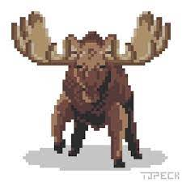This is the general idea for the giant moose
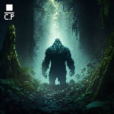This is the idea for the big foot unit
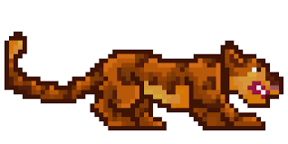This is the Jaguar unit look that we would want to go for when we start work on the units